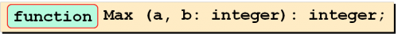
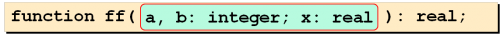
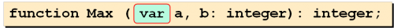
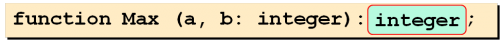
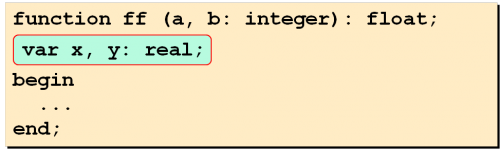
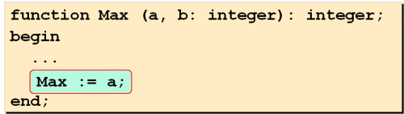
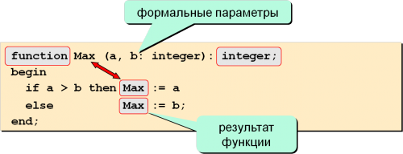
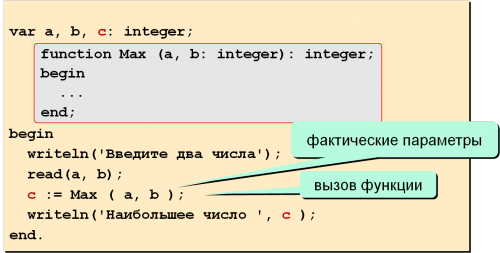

|
Функция в Паскале — это подпрограмма,
которая в отличие от процедуры всегда
возвращает какое-либо значение. Для этого в теле функции её
имени присваивается вычисленное значение — результат, который
она возвращает.
-
Функция – это
подпрограмма, результатом работы которой
является определенное значение.
-
Функции используются для:
-
выполнения одинаковых расчетов в
различных местах программы;
-
для создания общедоступных
библиотек функций.
-
Синтаксис:
-
заголовок начинается служебным словом
function

-
описание формальных
параметров (тех, значения
которых передаются из основной программы в
функцию):

-
параметры-переменные —
параметры, значения которых становятся доступны
и в основной программе (возвращаются в
программу)

-
тип возвращаемого функцией результата
описывается в конце заголовка функции через
двоеточие:

-
Вызывается функция в теле основной программы,
только если ее имя фигурирует в каком-либо
выражении. В отличие от процедуры, которая
вызывается отдельно.
-
Внутри функции можно объявлять и использовать локальные
переменные:

-
значение, которое является результатом,
записывается в переменную, имя которой
совпадает с
названием функции; объявлять ее НЕ
НАДО:

Рассмотрим синтаксис:
var …;{объявление глобальных переменных}
function название (параметры): тип результата;
var…; {объявление локальных переменных}
begin
… {тело функции}
название:=результат; {результат вычислений всегда присваивается функции}
end;
begin
… {тело основной программы}
end.
|
Пример: написать функцию,
которая вычисляет наибольшее из заданных двух
значений
Решение:

Вызов функции:

|